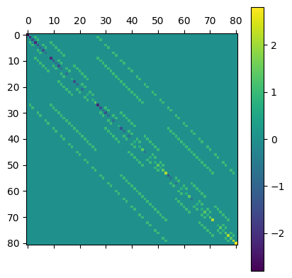
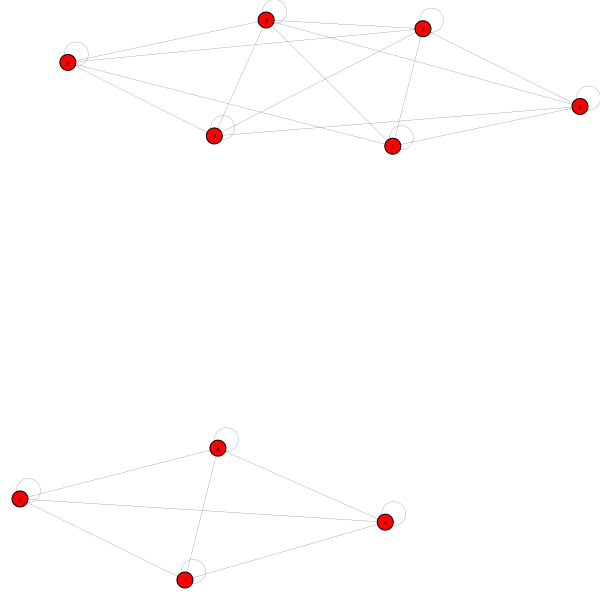

[6]:
import igraph
import matplotlib.colors as mcolors
import matplotlib.pyplot as plt
import networkx as nx
import numpy as np
import pandas as pd
import pynauty
from scipy.linalg import ishermitian
from sympy.combinatorics import Permutation, PermutationGroup
from qlinks.model.spin1_xy_model_1d import Spin1XYModel
from utils import setup_igraph
np.set_printoptions(threshold=np.inf)
pd.set_option("display.max_rows", None)
[ ]:
Spin-1 XY model#
Size of Hilbert space: \(3^n\)
\(n\) |
2 |
3 |
4 |
5 |
6 |
7 |
8 |
9 |
10 |
11 |
|---|---|---|---|---|---|---|---|---|---|---|
\(N_H\) |
9 |
27 |
81 |
243 |
729 |
2187 |
6561 |
19683 |
59049 |
177147 |
[287]:
coup_j, coup_h, coup_d = (1, -0.7, 0)
model = Spin1XYModel(4, coup_j, coup_h, coup_d, periodic=True)
mat = model.hamiltonian.toarray()
assert ishermitian(mat)
evals, evecs = np.linalg.eigh(mat)
plt.matshow(mat)
plt.colorbar()
[287]:
<matplotlib.colorbar.Colorbar at 0x13dfcb750>

[288]:
model.basis
[288]:
| 0 | 1 | 2 | 3 | |
|---|---|---|---|---|
| 0 | 1 | 1 | 1 | 1 |
| 1 | 1 | 1 | 1 | 0 |
| 2 | 1 | 1 | 1 | -1 |
| 3 | 1 | 1 | 0 | 1 |
| 4 | 1 | 1 | 0 | 0 |
| 5 | 1 | 1 | 0 | -1 |
| 6 | 1 | 1 | -1 | 1 |
| 7 | 1 | 1 | -1 | 0 |
| 8 | 1 | 1 | -1 | -1 |
| 9 | 1 | 0 | 1 | 1 |
| 10 | 1 | 0 | 1 | 0 |
| 11 | 1 | 0 | 1 | -1 |
| 12 | 1 | 0 | 0 | 1 |
| 13 | 1 | 0 | 0 | 0 |
| 14 | 1 | 0 | 0 | -1 |
| 15 | 1 | 0 | -1 | 1 |
| 16 | 1 | 0 | -1 | 0 |
| 17 | 1 | 0 | -1 | -1 |
| 18 | 1 | -1 | 1 | 1 |
| 19 | 1 | -1 | 1 | 0 |
| 20 | 1 | -1 | 1 | -1 |
| 21 | 1 | -1 | 0 | 1 |
| 22 | 1 | -1 | 0 | 0 |
| 23 | 1 | -1 | 0 | -1 |
| 24 | 1 | -1 | -1 | 1 |
| 25 | 1 | -1 | -1 | 0 |
| 26 | 1 | -1 | -1 | -1 |
| 27 | 0 | 1 | 1 | 1 |
| 28 | 0 | 1 | 1 | 0 |
| 29 | 0 | 1 | 1 | -1 |
| 30 | 0 | 1 | 0 | 1 |
| 31 | 0 | 1 | 0 | 0 |
| 32 | 0 | 1 | 0 | -1 |
| 33 | 0 | 1 | -1 | 1 |
| 34 | 0 | 1 | -1 | 0 |
| 35 | 0 | 1 | -1 | -1 |
| 36 | 0 | 0 | 1 | 1 |
| 37 | 0 | 0 | 1 | 0 |
| 38 | 0 | 0 | 1 | -1 |
| 39 | 0 | 0 | 0 | 1 |
| 40 | 0 | 0 | 0 | 0 |
| 41 | 0 | 0 | 0 | -1 |
| 42 | 0 | 0 | -1 | 1 |
| 43 | 0 | 0 | -1 | 0 |
| 44 | 0 | 0 | -1 | -1 |
| 45 | 0 | -1 | 1 | 1 |
| 46 | 0 | -1 | 1 | 0 |
| 47 | 0 | -1 | 1 | -1 |
| 48 | 0 | -1 | 0 | 1 |
| 49 | 0 | -1 | 0 | 0 |
| 50 | 0 | -1 | 0 | -1 |
| 51 | 0 | -1 | -1 | 1 |
| 52 | 0 | -1 | -1 | 0 |
| 53 | 0 | -1 | -1 | -1 |
| 54 | -1 | 1 | 1 | 1 |
| 55 | -1 | 1 | 1 | 0 |
| 56 | -1 | 1 | 1 | -1 |
| 57 | -1 | 1 | 0 | 1 |
| 58 | -1 | 1 | 0 | 0 |
| 59 | -1 | 1 | 0 | -1 |
| 60 | -1 | 1 | -1 | 1 |
| 61 | -1 | 1 | -1 | 0 |
| 62 | -1 | 1 | -1 | -1 |
| 63 | -1 | 0 | 1 | 1 |
| 64 | -1 | 0 | 1 | 0 |
| 65 | -1 | 0 | 1 | -1 |
| 66 | -1 | 0 | 0 | 1 |
| 67 | -1 | 0 | 0 | 0 |
| 68 | -1 | 0 | 0 | -1 |
| 69 | -1 | 0 | -1 | 1 |
| 70 | -1 | 0 | -1 | 0 |
| 71 | -1 | 0 | -1 | -1 |
| 72 | -1 | -1 | 1 | 1 |
| 73 | -1 | -1 | 1 | 0 |
| 74 | -1 | -1 | 1 | -1 |
| 75 | -1 | -1 | 0 | 1 |
| 76 | -1 | -1 | 0 | 0 |
| 77 | -1 | -1 | 0 | -1 |
| 78 | -1 | -1 | -1 | 1 |
| 79 | -1 | -1 | -1 | 0 |
| 80 | -1 | -1 | -1 | -1 |
[289]:
evecs_df = pd.DataFrame.from_dict(
{
"eval": evals,
"kin": [(evec.T @ model.kinetic_term @ evec).item() for evec in evecs.T],
"pot": [(evec.T @ model.potential_term @ evec).item() for evec in evecs.T],
"pot2": [(evec.T @ model.potential_term2 @ evec).item() for evec in evecs.T],
# "kin^2": [(evec.T @ model.kinetic_term @ model.kinetic_term @ evec).item() for evec in evecs.T],
# "pot^2": [(evec.T @ model.potential_term @ model.potential_term @ evec).item() for evec in evecs.T],
}
)
evecs_df[evecs_df["kin"].abs() < 1e-12]
[289]:
| eval | kin | pot | pot2 | |
|---|---|---|---|---|
| 9 | -2.800000e+00 | 0.000000e+00 | 4.000000e+00 | 4.000000 |
| 12 | -2.100000e+00 | 4.325189e-32 | 3.000000e+00 | 3.000000 |
| 13 | -2.100000e+00 | -5.148949e-31 | 3.000000e+00 | 3.000000 |
| 21 | -1.400000e+00 | -1.117686e-30 | 2.000000e+00 | 3.733333 |
| 22 | -1.400000e+00 | -1.632513e-17 | 2.000000e+00 | 2.006984 |
| 23 | -1.400000e+00 | -1.486638e-27 | 2.000000e+00 | 3.523126 |
| 24 | -1.400000e+00 | 2.582114e-17 | 2.000000e+00 | 2.069890 |
| 25 | -7.000000e-01 | 1.265810e-18 | 1.000000e+00 | 2.270999 |
| 26 | -7.000000e-01 | -3.328540e-18 | 1.000000e+00 | 2.262632 |
| 27 | -7.000000e-01 | 1.047637e-17 | 1.000000e+00 | 2.792752 |
| 28 | -7.000000e-01 | 4.365964e-17 | 1.000000e+00 | 2.392981 |
| 29 | -7.000000e-01 | -2.551906e-18 | 1.000000e+00 | 2.597389 |
| 30 | -7.000000e-01 | 3.406828e-18 | 1.000000e+00 | 1.949914 |
| 36 | -1.014603e-15 | -4.337156e-18 | -1.519157e-27 | 2.132192 |
| 37 | -4.981908e-16 | 5.876487e-18 | -2.050052e-28 | 2.901754 |
| 38 | -1.958426e-16 | -4.729080e-18 | -1.773330e-27 | 2.266695 |
| 39 | 1.271417e-16 | 2.877325e-19 | -4.947503e-28 | 2.780953 |
| 40 | 1.612694e-16 | 6.476489e-18 | -2.279352e-28 | 2.073129 |
| 41 | 5.486927e-16 | -2.527733e-17 | -2.785397e-30 | 2.800158 |
| 42 | 7.141098e-16 | 5.501339e-28 | -9.946022e-29 | 3.515152 |
| 43 | 8.981423e-16 | 2.013059e-18 | -3.586138e-27 | 2.747357 |
| 44 | 1.391621e-15 | 5.749428e-17 | -3.140793e-27 | 1.631095 |
| 50 | 7.000000e-01 | -9.287264e-18 | -1.000000e+00 | 2.227113 |
| 51 | 7.000000e-01 | -5.249309e-18 | -1.000000e+00 | 2.671841 |
| 52 | 7.000000e-01 | -6.426702e-18 | -1.000000e+00 | 2.115710 |
| 53 | 7.000000e-01 | 1.285196e-17 | -1.000000e+00 | 2.325280 |
| 54 | 7.000000e-01 | -7.660295e-18 | -1.000000e+00 | 2.397412 |
| 55 | 7.000000e-01 | 2.381509e-17 | -1.000000e+00 | 2.529310 |
| 56 | 1.400000e+00 | 4.146518e-29 | -2.000000e+00 | 3.733333 |
| 57 | 1.400000e+00 | -6.801944e-18 | -2.000000e+00 | 2.322240 |
| 58 | 1.400000e+00 | 1.283174e-17 | -2.000000e+00 | 3.185485 |
| 59 | 1.400000e+00 | 9.889138e-19 | -2.000000e+00 | 2.092275 |
| 67 | 2.100000e+00 | 8.931091e-33 | -3.000000e+00 | 3.000000 |
| 68 | 2.100000e+00 | -1.915223e-32 | -3.000000e+00 | 3.000000 |
| 71 | 2.800000e+00 | 0.000000e+00 | -4.000000e+00 | 4.000000 |
[290]:
3 ** model.n - np.linalg.matrix_rank(model.kinetic_term.toarray())
[290]:
35
[299]:
i = 23
plt.plot(evecs[:, i].T, linestyle="--", marker="o", color="red")
plt.grid()
np.where(np.abs(evecs[:, i]) > 0.05)
[299]:
(array([ 4, 6, 10, 12, 28, 30, 36, 54]),)
[293]:
g = nx.from_scipy_sparse_array(model.kinetic_term)
ig = igraph.Graph.from_networkx(g)
ntg = pynauty.Graph(
ig.vcount(),
directed=True,
adjacency_dict=nx.to_dict_of_lists(g),
)
aut_gp = pynauty.autgrp(ntg)[0]
perm_gp = PermutationGroup([Permutation(p) for p in aut_gp])
[294]:
g = nx.from_scipy_sparse_array(model.kinetic_term)
highlight = [
# np.where(np.abs(evecs[:, 231]) > 1e-6)[0],
]
# highlight = list(aut.degree_partition.values())
highlight = perm_gp.orbits()
# highlight = list(nx.bipartite.sets(g))
# highlight_color = list(mcolors.TABLEAU_COLORS.values())
# highlight_color = list(mcolors.CSS4_COLORS.values())
cmap = plt.get_cmap('Set3')
highlight_color = [mcolors.to_hex(cmap(i)) for i in range(cmap.N)]
cmap = plt.get_cmap('Set2')
highlight_color += [mcolors.to_hex(cmap(i)) for i in range(cmap.N)]
highlight_color *= 2000
# highlight_color = [
# "dimgray",
# "whitesmoke",
# "deepskyblue",
# "yellowgreen",
# "aqua",
# "pink",
# "tomato",
# "royalblue",
# "blueviolet",
# "cornflowerblue",
# "limegreen",
# ]
ig = setup_igraph(g, highlight, highlight_color)
degree = np.array(list(dict(g.degree).values()))
# (bipartite, types) = ig.is_bipartite(return_types=True)
# nodes = [int(n) for n in list(sub_sub_ig.vs["label"])]
# outer_boundary = list(nx.node_boundary(g, nodes))
# sub_ig = ig.induced_subgraph(np.append(nodes, outer_boundary))
# sub_ig = ig.induced_subgraph(np.where(degree == 8)[0])
# fig, ax = plt.subplots(figsize=(6, 6), facecolor="white")
igraph.plot(
ig,
# layout=ig.layout_kamada_kawai(),
# layout=ig.layout_reingold_tilford(root=[0, 25, 50, 75]),
# layout=ig.layout_bipartite(types=types),
vertex_size=16,
vertex_label_size=6,
# vertex_label_dist=1.5,
edge_width=0.2,
# edge_color="darkgray",
# target="qdm_subgraph_4x4.svg"
)
[294]:
[301]:
sub_components = ig.connected_components(mode="weak")
for i, c in enumerate(sub_components):
mat = nx.to_numpy_array(ig.subgraph(c).to_networkx())
print(repr(mat))
# print(i, mat.shape[0], mat.shape[0] - np.linalg.matrix_rank(mat), nx.is_bipartite(ig.subgraph(c).to_networkx()))
array([[0.]])
array([[0., 1., 0., 1.],
[1., 0., 1., 0.],
[0., 1., 0., 1.],
[1., 0., 1., 0.]])
array([[0., 1., 0., 0., 0., 0., 1., 0., 0., 0.],
[1., 0., 1., 1., 0., 0., 0., 1., 0., 0.],
[0., 1., 0., 0., 1., 0., 0., 0., 0., 0.],
[0., 1., 0., 0., 1., 0., 1., 0., 1., 0.],
[0., 0., 1., 1., 0., 1., 0., 1., 0., 0.],
[0., 0., 0., 0., 1., 0., 0., 0., 1., 0.],
[1., 0., 0., 1., 0., 0., 0., 1., 0., 1.],
[0., 1., 0., 0., 1., 0., 1., 0., 1., 0.],
[0., 0., 0., 1., 0., 1., 0., 1., 0., 1.],
[0., 0., 0., 0., 0., 0., 1., 0., 1., 0.]])
array([[0., 1., 1., 0., 0., 0., 0., 0., 1., 0., 0., 0., 0., 0., 0., 0.],
[1., 0., 0., 1., 0., 0., 0., 0., 0., 1., 0., 0., 0., 0., 0., 0.],
[1., 0., 0., 1., 0., 0., 0., 1., 0., 0., 1., 0., 0., 0., 0., 0.],
[0., 1., 1., 0., 1., 1., 0., 0., 1., 0., 0., 1., 0., 0., 0., 0.],
[0., 0., 0., 1., 0., 0., 1., 0., 0., 1., 0., 0., 0., 0., 0., 0.],
[0., 0., 0., 1., 0., 0., 1., 0., 0., 0., 1., 0., 1., 0., 0., 0.],
[0., 0., 0., 0., 1., 1., 0., 0., 0., 0., 0., 1., 0., 0., 0., 0.],
[0., 0., 1., 0., 0., 0., 0., 0., 1., 0., 0., 0., 0., 1., 0., 0.],
[1., 0., 0., 1., 0., 0., 0., 1., 0., 1., 1., 0., 0., 0., 1., 0.],
[0., 1., 0., 0., 1., 0., 0., 0., 1., 0., 0., 1., 0., 0., 0., 0.],
[0., 0., 1., 0., 0., 1., 0., 0., 1., 0., 0., 1., 0., 1., 0., 1.],
[0., 0., 0., 1., 0., 0., 1., 0., 0., 1., 1., 0., 1., 0., 1., 0.],
[0., 0., 0., 0., 0., 1., 0., 0., 0., 0., 0., 1., 0., 0., 0., 1.],
[0., 0., 0., 0., 0., 0., 0., 1., 0., 0., 1., 0., 0., 0., 1., 0.],
[0., 0., 0., 0., 0., 0., 0., 0., 1., 0., 0., 1., 0., 1., 0., 1.],
[0., 0., 0., 0., 0., 0., 0., 0., 0., 0., 1., 0., 1., 0., 1., 0.]])
array([[0., 1., 0., 0., 0., 0., 0., 1., 0., 0., 0., 0., 0., 0., 0., 0.,
0., 0., 0.],
[1., 0., 1., 1., 0., 0., 1., 0., 0., 1., 0., 0., 0., 0., 0., 0.,
0., 0., 0.],
[0., 1., 0., 0., 1., 0., 0., 1., 0., 0., 1., 0., 0., 0., 0., 0.,
0., 0., 0.],
[0., 1., 0., 0., 1., 0., 0., 0., 1., 0., 0., 1., 0., 0., 0., 0.,
0., 0., 0.],
[0., 0., 1., 1., 0., 1., 0., 0., 0., 1., 0., 0., 1., 0., 0., 0.,
0., 0., 0.],
[0., 0., 0., 0., 1., 0., 0., 0., 0., 0., 1., 0., 0., 0., 0., 0.,
0., 0., 0.],
[0., 1., 0., 0., 0., 0., 0., 1., 1., 0., 0., 0., 0., 0., 1., 0.,
0., 0., 0.],
[1., 0., 1., 0., 0., 0., 1., 0., 0., 1., 0., 0., 0., 0., 0., 1.,
0., 0., 0.],
[0., 0., 0., 1., 0., 0., 1., 0., 0., 1., 0., 0., 0., 1., 0., 0.,
1., 0., 0.],
[0., 1., 0., 0., 1., 0., 0., 1., 1., 0., 1., 1., 0., 0., 1., 0.,
0., 1., 0.],
[0., 0., 1., 0., 0., 1., 0., 0., 0., 1., 0., 0., 1., 0., 0., 1.,
0., 0., 0.],
[0., 0., 0., 1., 0., 0., 0., 0., 0., 1., 0., 0., 1., 0., 0., 0.,
1., 0., 1.],
[0., 0., 0., 0., 1., 0., 0., 0., 0., 0., 1., 1., 0., 0., 0., 0.,
0., 1., 0.],
[0., 0., 0., 0., 0., 0., 0., 0., 1., 0., 0., 0., 0., 0., 1., 0.,
0., 0., 0.],
[0., 0., 0., 0., 0., 0., 1., 0., 0., 1., 0., 0., 0., 1., 0., 1.,
1., 0., 0.],
[0., 0., 0., 0., 0., 0., 0., 1., 0., 0., 1., 0., 0., 0., 1., 0.,
0., 1., 0.],
[0., 0., 0., 0., 0., 0., 0., 0., 1., 0., 0., 1., 0., 0., 1., 0.,
0., 1., 0.],
[0., 0., 0., 0., 0., 0., 0., 0., 0., 1., 0., 0., 1., 0., 0., 1.,
1., 0., 1.],
[0., 0., 0., 0., 0., 0., 0., 0., 0., 0., 0., 1., 0., 0., 0., 0.,
0., 1., 0.]])
array([[0., 1., 0., 1., 0., 1., 0., 0., 0., 0., 0., 0., 0., 0., 0., 0.],
[1., 0., 1., 0., 1., 0., 0., 1., 0., 0., 0., 0., 0., 0., 0., 0.],
[0., 1., 0., 0., 0., 1., 0., 0., 1., 0., 0., 0., 0., 0., 0., 0.],
[1., 0., 0., 0., 1., 0., 0., 0., 0., 0., 1., 0., 0., 0., 0., 0.],
[0., 1., 0., 1., 0., 1., 1., 0., 0., 1., 0., 0., 1., 0., 0., 0.],
[1., 0., 1., 0., 1., 0., 0., 1., 0., 0., 1., 0., 0., 1., 0., 0.],
[0., 0., 0., 0., 1., 0., 0., 1., 0., 0., 0., 1., 0., 0., 1., 0.],
[0., 1., 0., 0., 0., 1., 1., 0., 1., 0., 0., 0., 1., 0., 0., 1.],
[0., 0., 1., 0., 0., 0., 0., 1., 0., 0., 0., 0., 0., 1., 0., 0.],
[0., 0., 0., 0., 1., 0., 0., 0., 0., 0., 1., 1., 0., 0., 0., 0.],
[0., 0., 0., 1., 0., 1., 0., 0., 0., 1., 0., 0., 1., 0., 0., 0.],
[0., 0., 0., 0., 0., 0., 1., 0., 0., 1., 0., 0., 1., 0., 0., 0.],
[0., 0., 0., 0., 1., 0., 0., 1., 0., 0., 1., 1., 0., 1., 1., 0.],
[0., 0., 0., 0., 0., 1., 0., 0., 1., 0., 0., 0., 1., 0., 0., 1.],
[0., 0., 0., 0., 0., 0., 1., 0., 0., 0., 0., 0., 1., 0., 0., 1.],
[0., 0., 0., 0., 0., 0., 0., 1., 0., 0., 0., 0., 0., 1., 1., 0.]])
array([[0., 1., 0., 1., 0., 0., 0., 0., 0., 0.],
[1., 0., 1., 0., 1., 0., 1., 0., 0., 0.],
[0., 1., 0., 1., 0., 1., 0., 0., 1., 0.],
[1., 0., 1., 0., 0., 0., 1., 0., 0., 1.],
[0., 1., 0., 0., 0., 1., 0., 0., 0., 0.],
[0., 0., 1., 0., 1., 0., 1., 1., 0., 0.],
[0., 1., 0., 1., 0., 1., 0., 0., 1., 0.],
[0., 0., 0., 0., 0., 1., 0., 0., 1., 0.],
[0., 0., 1., 0., 0., 0., 1., 1., 0., 1.],
[0., 0., 0., 1., 0., 0., 0., 0., 1., 0.]])
array([[0., 1., 0., 1.],
[1., 0., 1., 0.],
[0., 1., 0., 1.],
[1., 0., 1., 0.]])
array([[0.]])
[302]:
m = np.array([[0., 1., 0., 0., 0., 0., 1., 0., 0., 0.],
[1., 0., 1., 1., 0., 0., 0., 1., 0., 0.],
[0., 1., 0., 0., 1., 0., 0., 0., 0., 0.],
[0., 1., 0., 0., 1., 0., 1., 0., 1., 0.],
[0., 0., 1., 1., 0., 1., 0., 1., 0., 0.],
[0., 0., 0., 0., 1., 0., 0., 0., 1., 0.],
[1., 0., 0., 1., 0., 0., 0., 1., 0., 1.],
[0., 1., 0., 0., 1., 0., 1., 0., 1., 0.],
[0., 0., 0., 1., 0., 1., 0., 1., 0., 1.],
[0., 0., 0., 0., 0., 0., 1., 0., 1., 0.]])
m2 = m @ m
[303]:
g = nx.from_numpy_array(m2)
ig = setup_igraph(g)
igraph.plot(
ig,
vertex_size=16,
vertex_label_size=6,
edge_width=0.2,
)
[303]:

[304]:
sub_components = ig.connected_components(mode="weak")
for i, c in enumerate(sub_components):
mat = nx.to_numpy_array(ig.subgraph(c).to_networkx())
# print(repr(mat))
print(i, mat.shape[0], mat.shape[0] - np.linalg.matrix_rank(mat), nx.is_bipartite(ig.subgraph(c).to_networkx()))
0 6 3 False
1 4 1 False
[ ]: